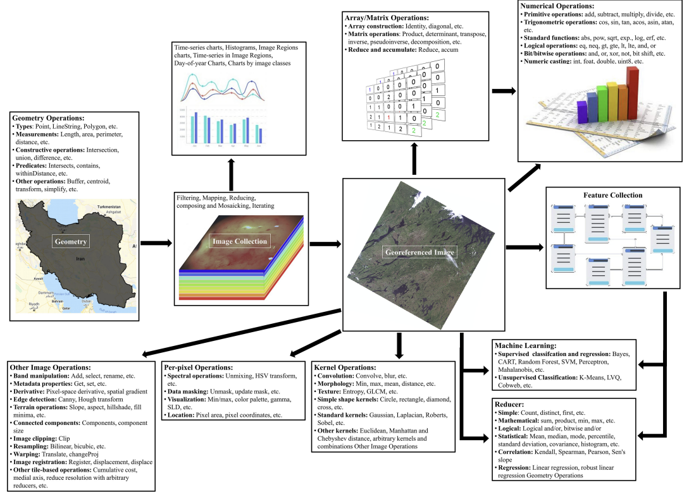

5.1 Summary
It’s week 6 now, and for this week we got introduced to Google Earth Engine(GEE) and its features, we covered the advantages of GEE usage and the several procedures it facilitates. While in the lecture it became obvious that using GEE would be more straightforward compared to QGIS and SNAP. This was such a relief and an exciting prospect, due to the reputation of GEE's ad a leading platform for analysing remote sensing data.
5.1.0.1 What is GEE?
Because of the enormous amounts of data captured from satellites, analysing data became more challenging. GEE has appeared as the solution to process and analyse big data. Basically, GEE is a cloud-based platform that can process large geospatial datasets across wide areas and observe environmental changes over extended periods.
5.2 Application
GEE is applied in various applications and is extensively employed around the world for different studies and analyses. That been said, it is crucial to briefly examine the importance of GEE, its functions, applications, benefits, and limitation in remote sensing analysis. This will be based on two papers which are: Google Earth Engine Cloud Computing Platform for Remote Sensing Big Data Applications: A Comprehensive Review (Tamiminia et al. 2020) and Google Earth Engine for geo-big data applications: A meta-analysis and systematic review. (Amani et al. 2020)
5.2.0.1 Why Google earth engine.
GEE enables users to access an archive of over a petabyte of satellite imagery and geospatial datasets, hosted on computing infrastructure provided by Google, making it an optimal setting for performing detailed analyses on satellite imagery and remote-sensing data. Integrated with a comprehensive library of historical and contemporary satellite imagery and robust APIs, GEE enables users to perform complex geospatial analyses directly using the computing power of the cloud. Unlike resorting to conventional analysis using locally downloaded satellite data, GEE mitigates the demand for large data downloads through its ability to directly process dense geospatial datasets in the cloud. In sum, GEE provides comprehensive access to geospatial data, and its cloud-based computing environment further allows it to seamlessly execute sophisticated analyses on satellite imagery and remote-sensing data.
5.2.0.2 GEE functions
Google Earth Engine offers a wide range of functions for performing spectral and spatial operations on single or multiple images. While it supports various pixel-based spectral operations that can be efficiently implemented in parallel on cloud architecture, it has limited support for spatial functions such as filters, edge detection methods, line detection via Hough Transform, and morphological operators due to parallel implementation challenges. However, it provides access to supervised and unsupervised machine learning algorithms including CART, SVM, RF classifiers, and clustering algorithms like K-means, Cascade K-means, X-means, Cobweb, and SNIC for tasks like image classification and segmentation.With access to over 40 years of datasets, GEE enables temporal and change analyses using functions like CCDC, EWMACD, and LandTrendr. These functions facilitate tasks such as continuous change detection, trend analysis, and vegetation analysis. Specialized algorithms like VCT and VERDET are available for analyzing forest disturbances and vegetation changes over time.

5.2.0.3 GEE Aplication
This platform presents a variety of applications, some of which will be depicted in the figure below along with the frequency of studies related to them. I will provide demonstrations for some of these applications.
- Vegetation
GEE’s computational efficiency supports large-scale and long-term vegetation monitoring, exemplified by studies mapping vegetation dynamics in Queensland, Australia, and detecting degradation in Rondônia, Brazil, with reported accuracies of 82.6% and 68.1%-85.3% respectively.
- Urban
GEE facilitates long-term monitoring of urban dynamics, including expansion mapping, climate zone monitoring, 4-D modeling, green space classification, and heat island identification, with studies showcasing its efficiency and accuracy in assessing urban growth and Surface Urban Heat Island (SUHI) effects.
- Land Cover
GEE provides extensive remote sensing datasets for land cover mapping, dynamics monitoring, coastal mapping, and wetland classification, with studies showcasing its effectiveness in regions like northern China and Mato Grosso, Brazil, achieving over 80% accuracy using various algorithms and satellite imagery integration.
- Natural disasters
GEE facilitates real-time and long-term analysis of remotely sensed data, enabling monitoring, forecasting, and resilience studies of natural disasters that cause destruction to both environment and human life such as droughts, floods, wildfires, landslides, hurricanes, and tsunamis, with studies showcasing its effectiveness in regions like Punjab, Pakistan, and Bangladesh.

5.2.0.4 Advantages and limitations

5.3 Reflection
It’s clear that Google Earth Engine (GEE) serves as a powerful tool for processing and analyzing large geospatial datasets, particularly in the realm of remote sensing. The platform’s cloud-based infrastructure and access to extensive satellite imagery and geospatial data make it invaluable for conducting comprehensive studies and analyses across various domains.Google Earth Engine plays a crucial part in advancing research and analysis in the field of remote sensing, offering powerful capabilities and a wide range of applications. Despite its limitations and that it’s not widely used, GEE remains a valuable platform for researchers and analysts seeking to leverage geospatial data for various studies and analyses.
5.4 Reference
Google Earth Engine for geo-big data applications: A meta-analysis and systematic review. (Tamiminia H,Salehi B 2020)
Google Earth Engine Cloud Computing Platform for Remote Sensing Big Data Applications: A Comprehensive Review.